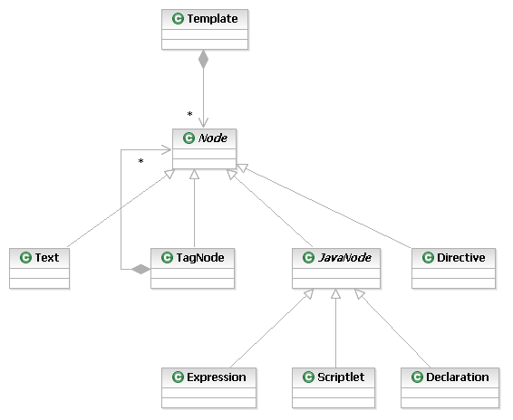
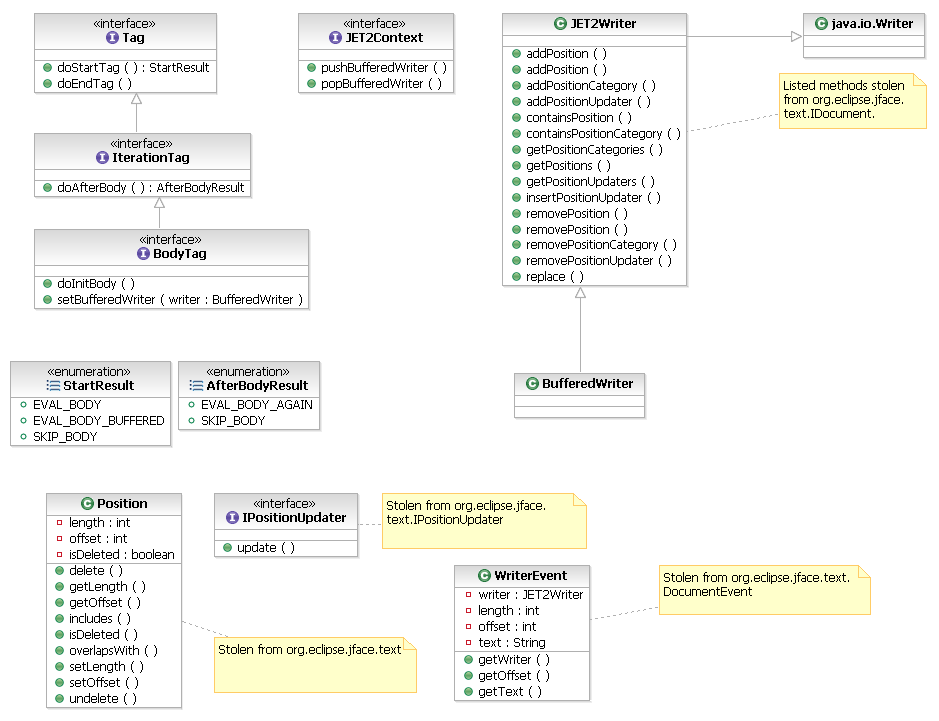

JET Enhancement Proposal (JET2)
Introduction
This document proposes enhancements for JET (Java Emitter Templates), the templating tool that is part of the Eclipse Modeling Framework. The enhancement work is tracked by Bugzilla
105966.
Revision History
| Date |
Version |
Description |
Author |
| Aug 26, 2005 |
0.1 |
Initial Version |
Paul Elder |
| Aug 30, 2005 |
0.2 |
Added Introduction and Overview sections, plus minor edits |
Paul Elder |
| Aug 31, 2005 |
0.3 |
Fix typos |
Paul Elder |
| Sep 6, 2005 |
0.4 |
Minor edits in response to review meeting |
Paul Elder |
Background
JET is typically used in the implementation of a "code generator". A
code-generator is an important component of Model Driven Development
(MDD). The goal of MDD is to describe a software system using abstract
models (such as EMF/ECORE models or UML models), and then refine and
transform these models into code. Although is possible to create
abstract models, and manually transform them into code, the real power
of MDD comes from automating this process. Such transformations
accelerate the MDD process, and result in better code quality. The
transformations can capture the "best practices" of experts, and can
ensure that a project consistently employes these practices.
However, transformations are not always perfect. Best practices are
often dependent on context - what is optimal in one context may be
suboptimal in another. Transformations can
address this issue by including some mechanism for end-user
modification
of the code generator. This is frequently done by using
"templates" to create artifacts, and allowing users to
substitute their own implementations of these templates if necessary.
This is the role of JET.
Even though JET solves a significant problem in transformations, it has a number of limitations:
- JET operates in the context of a Java program. While many
users EMF is quite Java-centric, MDD and transformations can be applied
in many domains. Forcing transformations creators and customizers to
work in Java represents a barrier to using JET in non-Java contexts.
- Building
a JET-based transformation in Eclipse involves knowledge of more than
just JET. Transformation developers must typically understand the
Eclipse Resource and UI APIs. Again, this represents a barrier to
transformation creation.
- JET, although inspired on Java
Server Pages (JSP), lacks an equivalent to JSP custom tags and tag
libraries. Current JSP best practice encourages the use of custom tags
over embedded Java within templates. Use of such tags helps separate
presentation concerns (such as how a generated class is formatted) from
process concerns (such as how a Java "getter" method is derived from a
field name). (In the JSP context, process concerns are often described
as business concerns.)
Overview
This document proposes enhancing JET in the following ways:
- Expand the JET language to support custom tags (which are
distributed in "tag libraries). (The language specification will be
described in a separate document.)
- Define Java interfaces and Eclipse Extension points for declaring custom tag libraries.
- Provide
Standard JET tag libraries that make it possible to create entire
transformations without recourse to Java and the Eclipse APIs. (These
tag libraries will be described in a separate document.)
- Provide Eclipse API and UI for invoking such transformations.
- Provide a JET template editor
The scope of the changes proposed are extensive. For this reason, it
is suggested that, if implemented, the resulting tool be given a new
name. JET2 is proposed, and used throughout the remainder of this
document.
Architectural Specifications
This section describes the central architectural features of the JET2 proposal.
The proposed architecture is divided into five parts:
- Compiling the JET2 language to Java
- Tag Library interfaces, classes and extension points
- JET2 Parser
- JET2 Project structure and builders
- Loading and executing JET2 templates within the development workspace
Note that this document does not prescribe interface, class or
method names. The purpose of this document is to describe key classes
in JET2, and how they interact. The implementer is free to change the
names to more appropriate names. However, this document should be
updated to reflect such changes.
Compiling the JET2 language to Java
Each JET2 template is compiled into a Java class. This section
describes the structure of the resulting Java class, and how JET2 tags
interact with template-embedded Java code and template text. Although
JET2 is similar to JSP, the JSP compilation practices are not always
followed. This is because:
- JSP operates in a different environment that JET2. In
particular, JSP must contend with the possibility of many near
simultaneous invocations of a JSP. This is an unlikely scenario for
JET2.
- JSP runs in a web servlet context, while JET2 does not.
- JET2
development cannot make use of the JSP Specification, as the license
agreement explicitly denies the right to use the specification for the
realization of anything less than a compile JSP implementation. JET2
cannot be a complete JSP implementation because JET2 does not operate
in servlet context, which is an explicit requirement of JSP.
JET2 templates can be parsed into the following Abstract sytnax tree (AST):

The following sections describe how individual nodes in such an AST are compiled into Java code.
Rules for emitting Templates as a whole
- Emit one Java class per template.
- The java class
must have a public 'generate' that accepts the templates arguments and
produces the result of template expansion.
- The method includes some initialization code, and then the body of the template is emitted to within this method.
- The content of the template is written to this method.
The current JET 'generate' method has the signature "String
generate(Object argument)",
and has the following structure:
public String generate(Object argument) {
StringBuffer stringBuffer = new StringBuffer();
emitted code for contained nodes...
return stringBuffer.toString();
}
It is proposed that JET2 templates using tags have the following structure:
public void generate(JET2Context context, JET2Writer out) {
emitted code for contained nodes...
}
Each JET2Context represents an instance of a template execution (or
a group of related templates). It contains data associated with
theexecution, including the input arguments. The JET2Context is
proposed for the following reasons:
- Some tags need to store and share information amongst themselves -
the JET2Context can provided a mechanism for doing this.
The JET2Writer is a generalized stream of characters. It will likely
be a specialization of java.io.Writer. The JET2Writer is proposed for
the following reasons:
- Some tags need to record positions in the writer for
subsequent processing, including replacement. JET2Writer allows the
creation and consistent maintenance of these positions (and
StringBuffer does not). The intension is to implement a facility such
as is found in org.eclipse.java.text.IDocument and
org.eclipse.java.text.Position.
Rules for emitting text
- Template text can be written directly to the current writer.
The following is an example:
out.write("some text");
Note that JET currently emits text as final fields in the template
class, and then references these fields in calls to write(). However,
it is unclear whether this results in any significant benefit in terms
of performance (whether in memory usage or speed).
Rules for emitting Java Expressions and Scriplets
- Java Expressions and Scriptlets must all me emitted within
the 'generate' method. (Variables defined in a scriptlet must be
visible to subsequent scriptlets and expressions.)
Standard prolog for emitting Tags
- Emit a variable of type tag type, and assign it a new instance of the tag class.
- Call the setParent method, passing the parent tag variable, or null if the tag has no parent.
- Call the setContext method, passing the tag the current template context.
- Initialize tag attributes by calling appropriate tag setXXX() methods.
- Call
the tag doStartTag() method, and saving the result in local variable.
doStartTag() can return one of the following enumerated values
EVAL_BODY, SKIP_BODY or EVAL_BODY_BUFFERED.
The following code illustrates this rules:
TagType tag = new TagType();
tag.setParent(parentTag);
tag.setContext(context);
Rules for emitting tags without a body
- Use the standard prolog for emitting Tags.
- Emit a call to the tag's doStartTag() method.
- Emit a call to the tag's doEndTag() method.
standard prolog
tag.doStartTag();
tag.doEndTag();
Rules for standard tag with a body
A standard tag with a body neither iterates, nor processes the
contents from its body. That is, it can emit content at the start of
the tag, and the end of the tag, and it can determine whether is body
is written or not.
- Use the standard prolog for Tags. doStartTag() will return EVAL_BODY or SKIP_BODY.
- Emit an if statement testing that doStartTag() did not return SKIP_BODY.
- Within the if statement, emit the code to process the body content.
- After the if statement, emit a call to doEndTag().
standard prolog
StartResult tagStartResult = tag.doStartTag();
if( tagStartResult != StartResult.SKIP_BODY ) {
emitted code for body content...
}
tag.doEndTag();
Rules for tags that process the body content
- Use the standard prolog for Tags. doStartTag() will return one of EVAL_BODY, SKIP_BODY or EVAL_BODY_BUFFERED.
- Emit an if statement testing that doStartTag() did not return SKIP_BODY.
- With the if statement, emit a second if statement to test if doStartTag() returned EVAL_BODY_BUFFERED.
- Within the second if, allocate a buffered writer, and inform the tag by calling setBufferedWriter() and doInitBody().
- Close the second if.
- Emit the code for the body
- Emit a third if (still with-in the first), which pops the buffered writer if one was pushed earlier.
standard prolog
StartResult tagStartResult = tag.doStartTag();
if( tagStartResult != StartResult.SKIP_BODY ) {
if( tagStartResult ==
StartResult.EVAL_BODY_BUFFERED ) {
out = context.pushBufferedWriter();
tag.setBufferedWriter((BufferedWriter)out);
tag.doInitBody();
}
emitted code for body content...
if( tagStartResult ==
StartResult.EVAL_BODY_BUFFERED ) {
out = context.popBufferedWriter();
}
}
tag.doEndTag();
Rules for iterating tags
- Same as above, except that the code emitted by for the body
is enclosed in a do {...} while() statement. The while condition calls
the tag's doAfterBody() message, and continues if the result is
DO_BODY_AGAIN.
standard prolog
StartResult tagStartResult = tag.doStartTag();
if( tagStartResult != StartResult.SKIP_BODY ) {
if( tagStartResult ==
StartResult.EVAL_BODY_BUFFERED ) {
out = context.newBufferedWriter();
tag.setBodyWriter((BodyWriter)out);
tag.doInitBody();
}
do {
emitted code for body
content...
} while(tag.doAfterBody()
!= AfterResult.DO_BODY_AGAIN);
if( tagStartResult ==
StartResult.EVAL_BODY_BUFFERED ) {
out = context.popWriter();
}
}
tag.doEndTag();
Notes on emitting code for tags
The above rules can result in deeply nested code should a template
contain deeply nested tags. Note that the code emitted for any given
tag can be refactored into a function call, provided that tag contains not nested Java Scriptlet or Expression. The extracted method could have the following structure:
private void tag(JET2Context context, JET2Writer out, Tag parentTag) {
emitted code for the tag
}
In code emitted for a tag with its enclosing body would be simply:
tag(context, out,
parentTag);
Tag Library Interfaces and Classes
The above discussion suggests tags have the following associated interfaces.

JET2 Parser
The current JET parser classes appear to be flexible enough to
handle the expansion of the JET2 language to contain additional
directives and most importantly, tag. The proposal is to:
- Add a new nested static classes "Tag" , "EndTag" and
"NoContentTag" to JETParser. These represent <xxx attributes>,
</xxx> and <xxx attributes/>, respectively.
- JETReader
may need minor modifications to getNextContext() to always consider
'<' as the potential start of a JET2 language element, even when an
@page startTag has been processed. (Because JET2 will include a
directive (@taglib) for specifying tag library namespaces, it is
unnecessary to remap these characters.)
- Implement an
enhanced JETCompiler class. At least initially, this will be done by
cloning JETCompiler into JET2Compiler so as not to destablize the
current compiler.
TODO: Some mechanism to select between the compilers by some
sort of runtime parameter is desireable, much the way this is possible
with the JDT. Details to be worked out.
JET2 Project Structure
It is proposed that as much as possible, JET2 rely on existing
Eclipse infrastructure to compile generated Java classes into code. In
the subsequent section, it is proposed that JET2 dynamic template
loading be accomplished by using the OSGi dynamic loading/unloading of
Bundles. This implies that the JET2 project builder must ultimately
produce a valid OSGI bundle.
It is proposed that projects containing dynamicly loadable templates
(such as those that customize the behaviour of the EMF code generator,
and the proposed transformations) have a specific Eclipse Nature that
builds the JET2 templates into a loadable bundle. Such a nature would
require the following builders:
- the JETBuilder
- the JDT Java Builder
- the PDE Manifest Builder
- A
custom builder to JAR the variously build objects into Bundle jar. This
has been simulated using a simple ANT script and the ANT builder.
This has a number of advantages over the current practice of creating a .JETEmitters project:
- Configuration of extra plug-in dependencies can be done using standard mechanisms (the bundle manifest).
- Concurrent
(and incompatible) writing to the .JETEmitters project is no longer a
concern. (This was not likely a concern with the EMF code generator,
but it is in transformations, where creating new transformations by
composing others is a common use case.
- The dynamic templates
can reference Java classes created in the dynamic template project.
This could be in the form of helper classes called directly from the
JET2 template using Java, or as newly defined customer tags.
The main disadvantage of this approach is that builder artifacts
(including generated .java and .class files) will appear in the project
containing the templates. However, this can be mitigated by the use of
filters, much as the Package Explorer filters out 'bin' directories by
default.
Loading and executing JET2 templates within the development
workspace
As the previous section alluded, it is proposed that the dynamic
loading of JET2 templates be accomplished via the OSGi framework. This
section docments the details of doing this.
- In order to load a bundle with OSGi, a BundleContext is
required. On plugin start-up,
org.eclipse.core.runtime.Plugin.startup(BundleContext) is called. The
JET2 plugin responsible for dynamic plugin loading would store this
bundle context for subsequent dynamic loading of a JET2 bundle.
- Once
a BundleContext is in hand (it is, in fact, a system singleton), a
bundle may be loaded calling org.osgi.framework.installBundle(String).
This returns an org.osgi.framework.Bundle.
- Upon successful loading, the bundle be started by calling org.osgi.framework.Bundle.start().
- A
bundle may be uninstalled by calling
org.osgi.framework.Bundle.uninstall(), which implies stopping the
bundle (org.osgi.framework.Bundle.stop()).
- The easiest way
for the JET2 dynamic loader to load classes out of the loaded bundle is
to have the bundle implement an extension to an extension point defined
by the JET2 dynamic loader plugin. The extension would contain
Configuration Elements that included the names of the template classes.
It would then suffice to call
org.eclipse.core.runtime.IConfigurationElement.createExecutableExtension(String).